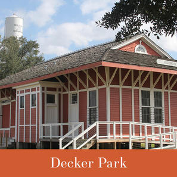
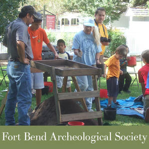

Discover Fort Bend history
Four places to explore
Learn more about the Fort Bend Museum, DeWalt Heritage Center, Decker Park and the Fort Bend Archeological Society.
Fort Bend Museum
Our local history museum at 410 Jackson Street in Richmond.

DeWalt Heritage Center
A historic home to tour with family and friends.

Decker Park
A historic park to explore in Richmond.

Archeological Society
Hands on history activities for kids and families.